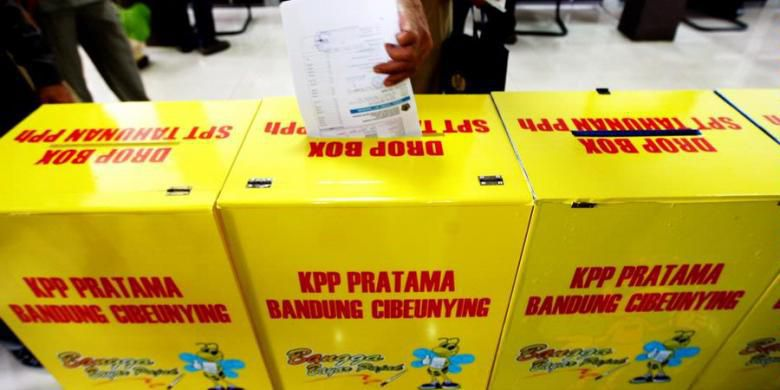

Wahai ditjen pajak, begini tips memata matai orang kaya kekinian
BAMBANG P JATMIKO
KabarKabur.com - 25/09/2017, 06:44 WIB

Warga memasukkan formulir SPT Pajak mereka para kotak yang tersedia di Kantor Pelayanan Pajak Pratama Bandung Cibeunying, beberapa waktu lalu.
Imbauan Ditjen Pajak agar masyarakat memasukkan smartphone ke dalam Surat Pemberitahuan Tahunan (SPT) pajak memunculkan beragam reaksi dari masyarakat. Bahkan mantan Menteri Koordinator Kemaritiman, Rizal Ramli ikut bercuap-cuap.
Bagi Ditjen Pajak, memasukkan smartphone dalam SPT pajak memiliki alasan tersendiri. Dengan melaporkannya ke SPT pajak, bisa diketahui sinkronisasi antara besarnya penghasilan dengan penambahan harta wajib pajak.
Sementara itu, masyarakat dan para pemilik smartphone menganggap aturan itu dibuat-buat. Bahkan Rizal Ramli menuding kebijakan tersebut merupakan bentuk kepanikan otoritas pajak yang terbebani oleh target tinggi.
Terlepas dari perdebatan tersebut, Ditjen Pajak memang mengangap smartphone sebagai indikator naiknya kekayaan atau aset seseorang. Hal ini semakin ditegaskan oleh admin medsos Ditjen Pajak yang mengingatkan para pemilik iPhone X untuk melaporkan gadget itu dalam SPT pajak.
Saya tidak bermaksud berdebat mengenai peraturan soal hal ini, karena aturan sudah cukup jelas.
Namun pertanyaannya, apakah masih relevan menilai smartphone menjadi indikator bertambahnya kekayaan wajib pajak sehingga harus dilaporkan dalam SPT pajak?
Orang Kaya Kekinian
Tahun 1899, sosiolog AS Thorstein Veblen memublikasikan buku yang berjudul The Theory of the Leisure Class. Dalam buku tersebut, Veblen memotret kondisi sosial orang-orang berduit di AS seputar bagaimana mereka membelanjakan uangnya.
Pada buku itu, Veblen menyatakan bahwa industri telah membagi masyarakat menjadi dua bagian. Pertama adalah karyawan dan kedua adalah pemilik modal.
Pemilik modal adalah mereka yang memiliki uang berlimpah dan waktu luang yang banyak. Mereka tak memiliki kewajiban untuk bekerja setiap saat, karena semua pekerjaan dilakukan oleh karyawannya.
Lainnya, para pemilik harta itu juga gemar mengenakan barang-barang mahal. Veblen menggunakan istilah conspicuous consumption atau “konsumsi terang-terangan” untuk menggambarkan kebiasaan para pemilik modal di AS pada waktu itu.
Terminologi itu merujuk pada tren bahwa orang berduit di AS di akhir abad ke-19 cenderung membeli barang-barang yang mencolok untuk memamerkan status sosial mereka.
Dengan barang-barang tersebut, orang kaya di AS saat itu ingin menyampaikan pesan bahwa mereka adalah kelompok elit. Status mereka berbeda dengan kebanyakan orang yang hanya sebagai karyawan.
Hingga lebih dari 100 tahun, teori Veblen ini menjadi salah satu rujukan utama bagi berbagai pihak—mungkin salah satunya adalah Ditjen Pajak—untuk mendefinisikan siapa sebenarnya orang yang berduit itu.
Ya, orang yang berduit adalah mereka yang gemar belanja barang-barang mahal sebagai penanda bahwa mereka golongan kelas atas.
Selanjutnya pada pertengahan 2017 ini, terbitlah buku yang berjudul The Sum of Small Things: A Theory of the Aspirational Class, yang ditulis oleh Elizabeth Currid-Halkett.
Buku tersebut masih membahas tentang perilaku orang kaya, sebagaimana yang dibahas oleh Veblen. Namun, perilaku orang kaya yang ada saat ini sudah sangat berbeda dengan seabad lalu. Currid-Halkett menyebut orang kaya era sekarang sebagai “Aspirational Class” atau kelas aspiratif.
Orang kaya kekinian, menurut Currid-Halkett, hanya mengalokasikan sedikit kekayaan untuk membeli barang-barang konsumtif. Mereka juga tidak hobi mengenakan baju mewah dan barang-barang mahal yang terlihat mencolok.
Sebaliknya, kekayaan ingin mereka manfaatkan sebesar-besarnya untuk meningkatkan kualitas kehidupan.
Salah satunya, mereka terobsesi dengan gaya hidup yang sehat dan berkualitas. Orang berduit sangat gemar mengonsumsi sayur dan buah organik, rutin mengikuti kelas kebugaran, yoga, parenting, dan sebagainya.
Lainnya adalah mereka ingin lebih bahagia. Caranya, mereka gemar menjalankan hobi, hingga aktif di berbagai kegiatan sosial seperti memberi bantuan kepada orang-orang yang membutuhkan.
Dalam hal fesyen, alih-alih mengenakan barang-barang branded yang menyolok perhatian, orang berduit lebih suka membeli barang-barang biasa dan proses produksinya tidak eksploitatif, baik terhadap alam maupun manusia.
Hal ini terkonfirmasi dari gaya hidup para miliarder dunia. Sebut saja Mark Zuckerberg yang tiap hari memilih mengenakan kaos oblong. Demikian juga Bill Gate yang memilih mengenakan arloji Casio yang harganya hanya di bawah Rp 200.000.
Di Indonesia, kita juga bisa melihat orang-orang kaya ini lebih memilih mengenakan barang-barang yang tak mencolok. Sebut saja pengusaha yang kini menjabat Menteri Kelautan dan Perikanan Susi Pudjiastuti. Ke mana-mana dia menenteng tas anyaman buatan UMKM asal Bawean.
Dalam kaitannya dengan politik, orang-orang berduit ini biasanya memiliki aspirasi yang sedikit berbeda.
Sekedar contoh, jika aspirasi kebanyakan orang di negara berkembang lebih banyak terkait dengan isu seputar ekonomi dan kesejahteraan, orang berduit punya isu lain. Mereka kerap menyuarakan isu tidak bersentuhan dengan urusan perut dan dapur.
Ya, mereka punya utopia sendiri terkait bagaimana seharusnya masyarakat yang ideal itu.
Punya Smartphone Pertanda Kaya?
Buku The Sum of Small Things: A Theory of the Aspirational Class, setidaknya memang ada benarnya. Bahwa, orang berduit di era kekinian tidak selalu identik dengan barang-barang mewah. Justru, mereka lebih memilih menjadikan diri sendiri lebih baik, lebih sehat, lebih bahagia, tanpa harus memamerkan kekayaan ke orang lain.
Sebaliknya, mereka yang pendapatannya pas-pasan-lah, yang terobsesi dengan conspicuous consumption. Tak hanya fesyen, namun juga gawai. Celakanya, barang-barang tersebut kebanyakan diperoleh melalui utang.
Seorang kawan yang bekerja di perusahaan fintech bercerita, betapa kuota kredit tanpa agunan (KTA) dengan bunga tinggi sudah habis karena banyaknya nasabah yang mengajukan permintaan pinjaman. Fasilitas tersebut digunakan untuk membeli barang-barang konsumsi, seperti halnya gawai dan lainnya.
Para nasabah tersebut ingin mengikuti tren gawai dengan membeli produk-produk teranyar melalui utang. Akibatnya, tidak sedikit dari debitur KTA tersebut yang kesehatan finansialnya menjadi bermasalah.
Sementara itu, Director of Marketing and Communication PT Erajaya Swasembada, Djatmiko Wardoyo saat berbincang dengan saya menceritakan tren penjualan smartphone di perusahaannya.
Menurut Djatmiko, dari seluruh penjualan smartphone yang dibukukan perusahaan, 40 persen konsumen membayar secara tunai dan 60 persen menggunakan kartu kredit.
Nah, dari 60 persen konsumen yang membayar dengan kartu kredit, hanya 20 persen yang melunasinya secara langsung (reguler) dan sisanya 80 persen membayar dengan cara mencicil. Pola pembayaran ini berlaku di seluruh jenis smartphone. Mulai dari yang kelas rendahan hingga smartphone yang highend.
Tidak bermaksud melakukan generalisasi terhadap pemilik smartphone, namun yang jelas tak bisa menilai naiknya kekayaan atau aset seseorang dari kepemilikan smartphone. Barang tersebut tidak serta-merta mencerminkan peningkatan pendapatan.
Alih-alih pertanda kenaikan aset, smartphone baru justru bisa menjadi indikator naiknya utang yang ditanggung seseorang.
Memata-matai Orang Kaya
Melihat trend orang kaya kekinian, ada baiknya Ditjen Pajak mulai kritis, kreatif, dan inovatif memikirkan hal-hal lain yang harus dilaporkan dalam SPT pajak. Dan, tak terpatok pada barang-barang yang dianggap sebagai penanda kesuksesan seperti smartphone.
Untuk itu, bro Dirjen Pajak bisa memerintahkan stafnya untuk mulai memata-matai orang kaya kekinian dengan cara lain.
Pertama, mendaftar hobi para wajib pajak. Caranya, ya dengan mewajibkan para wajib pajak melaporkan hobi mereka ke dalam SPT pajak. Bagaimanapun, hobi-hobi tertentu patut dicurigai sebagai hobinya orang kaya.
Kedua, mencatat makanan kesukaan wajib pajak. Seluruh wajib pajak perlu untuk melaporkan makanan favoritnya dalam SPT pajak.
Ini penting untuk dilaporkan. Orang kaya memiliki selera makanan yang berbeda dari orang kelas menengah pekerja yang kebanyakan suka makan fast food. Jika dalam kolom ini ada tulisan “organik”, Ditjen Pajak bisa memata-matai wajib pajak tersebut.
Ketiga, jika masih dirasa kurang komprehensif, Ditjen Pajak bisa menambah kolom cita-cita dalam SPT pajak. Bagaimanapun, cita-cita penting untuk dilaporkan ke dalam SPT pajak, karena orang-orang berduit punya utopianya sendiri.
Jika cita-cita yang dilaporkan masih umum, wajib pajak tersebut tak perlu dicurigai. Namun, apabila cita-cita itu sudah agak berbeda dengan orang pada umumnya, ini nih yang patut dicurigai sebagai orang kaya.
Keempat, Ditjen Pajak perlu untuk memaksa para wajib pajak menuliskan pesan dan kesan dalam SPT pajak. Orang berduit biasanya punya pesan dan kesan tertentu kepada pemerintah menyangkut isu-isu yang sangat spesifik dan berbeda dari kebanyakan masyarakat pada umumnya.
Jika pesan dan kesannya agak nyleneh, yang bersangkutan pantas dimasukkan dalam daftar wajib pajak yang harus diawasi.
Demikian saja, semoga Ditjen Pajak selalu diberi kesuksesan dan kelancaran dalam memata-matai orang berduit di Indonesia.
Editor :Heru Margianto